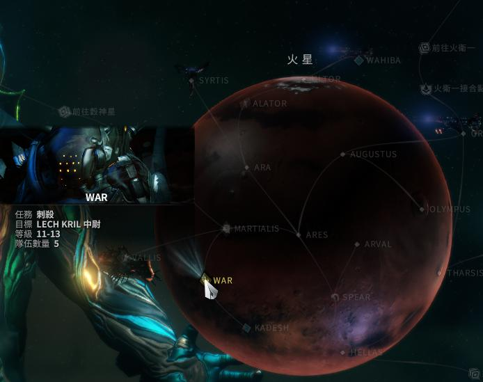
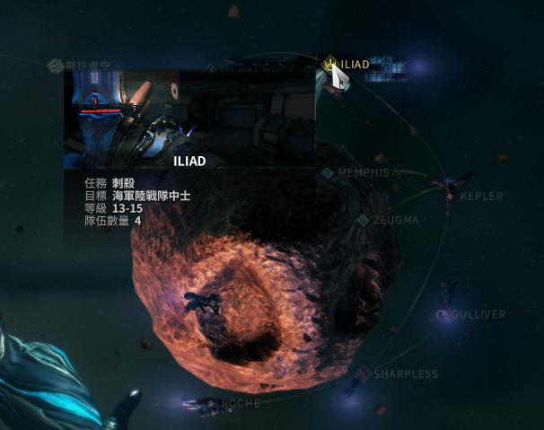
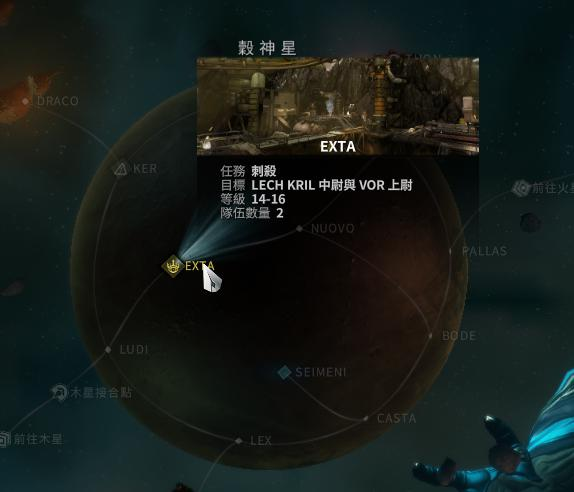

warframe這個遊戲對新手來說相當不友善,所以我想多幫幫大家,使各位不再迷惘戰甲怎麼獲得以及哪種關卡要帶哪種戰甲,要去哪裡獲得你需要的戰甲,盡快的能體會這個遊戲的樂趣,我將會簡單講解大致上的資訊,如果想要戰甲更多的資訊可以點擊每個戰甲下面的連結,會有更詳細的說明.
操縱著劍的大師,最一開始可以選擇的三個戰甲之一,也是對於新手來說,比較實用的一隻,在這世界裡,是第一隻被製造出來的戰甲.
擁有水平中間水準的基本素質,核心技能為4技,可以遠距離攻擊,並且可以穿牆,也無須擔心彈藥,基本上是技能從頭開到尾.
excalibur的介紹影片輸出手,可以適用於各種以擊殺敵人為主的關卡
1.一開始選擇
2.火星刺殺任務獲得
以磁力為武器的戰甲,同是最一開始可以選擇的三隻戰甲之一,比較偏向於補助
Mag雖然血量等素質較為低,但是其被動可以在旋身飛躍時,自動將周圍的可時取物吸過來,核心技能為2技,可以把敵人的護盾引爆,並且回復友方的護盾
mag的介紹影片是合作為補助,可以適用於各種以擊殺敵人為主的關卡
1.一開始選擇
2.火衛一刺殺任務獲得
駕馭著冰雪的人,速度雖然較慢,但是擁有厚重護甲,可以保護隊友,也可以消滅敵人.
雖然行動緩慢,但是由於較高的護甲,所以並不會說太過於脆弱,加上技能的補助,幾乎可以把他形容為碉堡,核心技能為3技,可以製造一個大型像倒蓋碗公般的防護罩,在防護罩裡面可以不會被敵人攻擊到,使得眾人可以有個穩定的攻擊點.
frost的介紹影片防禦類型的關卡,例如:移動防禦,防禦
穀神星刺殺
